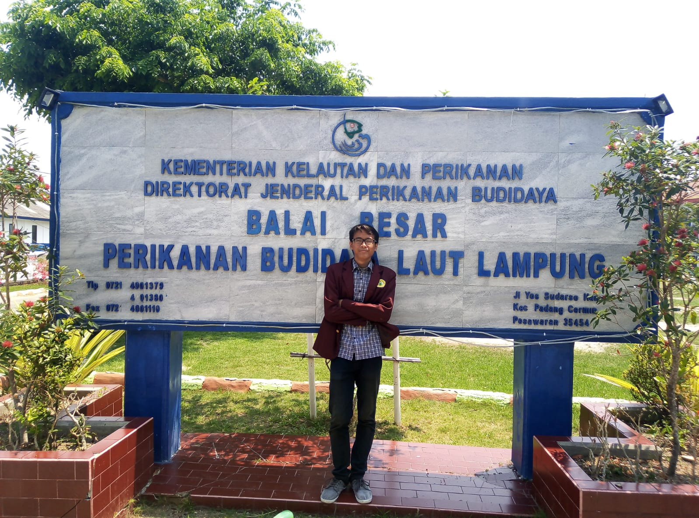
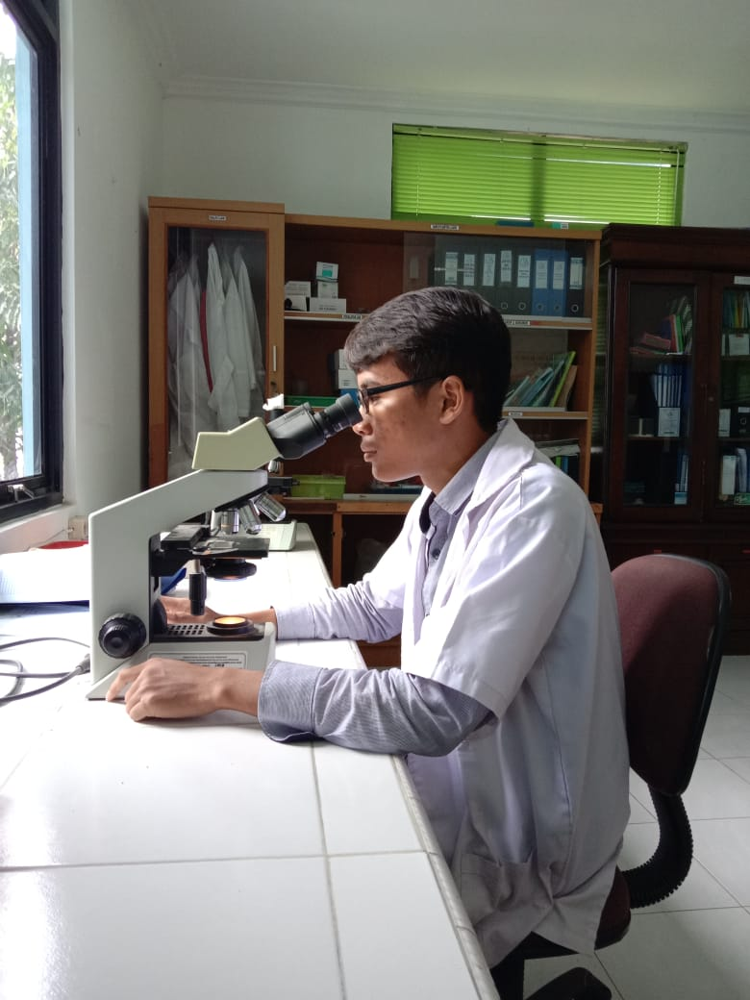
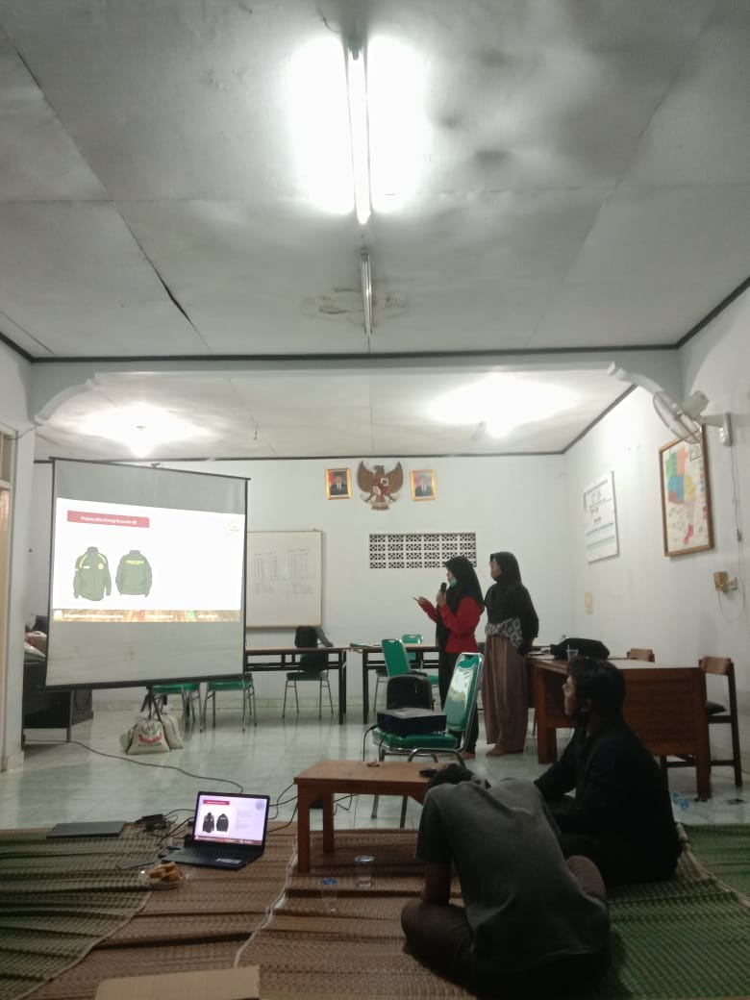

Profile
Halo, Perkenalkan Namaku Muhamad Halim Aziz Marwan. Aku Merupakan lulusan Sarjana Ilmu Perikanan Universitas Sultan Ageng Tirtayasa. Selama masa kuliah aku mempunyai pengalaman magang sebagai asissten laboratorium, selain itu aku juga memiliki pengalaman organisasi masyarakat yaitu.. Karang Taruna sebagai sekretaris. Setelah lulus dari kuliah, aku banyak mengikuti pelatihan-pelatihan sembari menunggu panggilan kerja. Aku mempunyai berminat menjadi seorang progamer. Maka dari itu aku mengikuti pelatihan dari Dicoding ini..
Keahlian
Berikut ini adalah beberapa jenis keahlian Saya bila disimpulkan dengan persentasi. Grafik tersebut juga akan semakin meningkat sebab disela-sela kesibukan, Saya juga tidak lupa untuk terus mengasah kemampuan pada bidang tersebut dengan mengikuti course. Hal itu saya lakukan demi meningkatkan kemampuan personal Saya.
Pengalaman
Pengalaman Magang
Pengalaman magang saya yaitu menjadi asisten laboratorium di Balai Riset Pemulihan Sumber Daya Ikan (BRPSDI) Jatiluhur Selama 1 bulan pada tahun 2020.
Bertugas membantu tugas Kepala Laboratorium, menjaga dan merapikan alat-alat laboratorium, dan melakukan sampling dengan petugas sampling.
Pengalaman Organisasi
Pengalaman organisasi saya yaitu menjadi sekretaris di organisasi kemasyarakatan Karang Taruna selama 1 tahun, 2020-2021.
Memiliki tugas merapikan dan mengarsipkan surat serta dokumen, menjadwalkan rapat kegiatan bersama ketua, dan mencatat hasil rapat kegiatan.
Kontak
Untuk yang ingin bertanya mengenai saya lebih lanjut bisa hubungi:
Email : Haliimazis21@gmail.com
Tlp/Wa: 0895320609381